A pass over every organizer screen, the public check-in page and the auth screens, asking three questions: is it easy to use, does it look good, does it follow design and UX practice. The short answer is that Conventioner already contains a good design language - it is just not the one most of the product is written in.
The individual screens the recent epics built are good. The application-form builder, the triage card, the assignment summary and the check-in page at phone width are well-designed work: clear hierarchy, honest information density, and the best interface writing I have read in a codebase this size.
What is wrong is not on any one screen. It is that there is no shared component layer. 12,211 lines of CSS live in 71 separate scoped <style> blocks, so every file re-decides its own radius, shadow, spacing, type size and colour from scratch. The recent work decided well and converged on something coherent - 6px radius, a three-layer shadow, 12px gaps. The older files decided differently. Both now render side by side on the same screen.
So the product does not need a designer to invent a look. It needs the look it already has, written down as tokens and applied to the files that predate it. Most of what follows is evidence for that one sentence.
Two of the findings below (screen width, who appears in the Vendors list) are already open tickets on Claims we can support, and room to show them, charted this morning. They are reported here with fresh measurements rather than as new discoveries.
Added after the first draft, while grilling these findings. Chasing the colour inventory turned up two custom properties that are referenced but never defined. One of them makes the Archive Market confirmation button render as white text on a white dialog with no border - invisible, on the only irreversible action in the product. That is H0, and it is now the most severe thing in this report.
Assignment Results carries both design languages at the same moment. I counted them at runtime: 77 elements painted with the modern three-layer shadow, and 9 painted with the legacy halo. Nothing tells the organizer which era they are looking at, but the eye registers it as the screen not quite holding together.
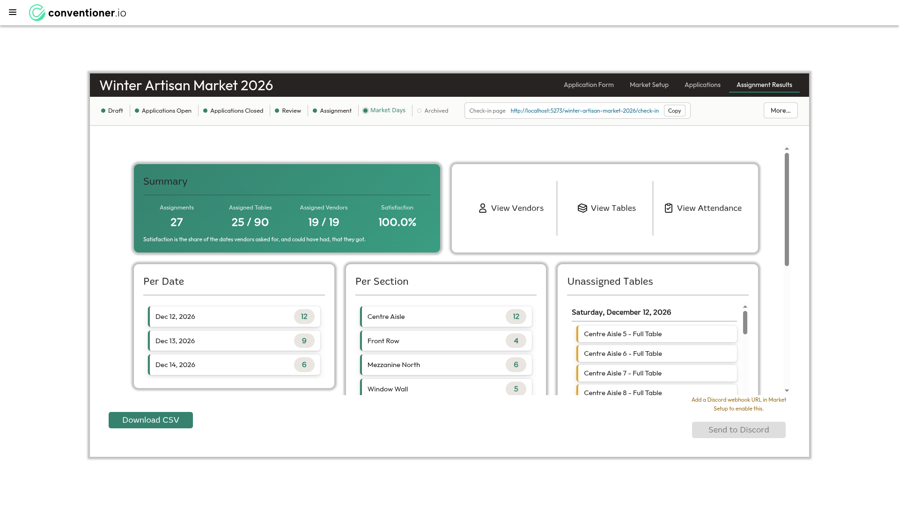
| Radius | 6px |
|---|---|
| Shadow | 0 0 0 1px .07 + 0 2px 4px .07 + 0 6px 14px .08 |
| Gap | 12px |
| Fields | Left-aligned, light border |
| Files | SummaryCard, AssignmentResults, AssignmentStatListItem, DashboardView, TablesView |
| Radius | 10px, 20px, 5px, 50% |
|---|---|
| Shadow | 0 0 4px 5px rgba(0,0,0,.25) and its inset twin |
| Gap | 2px, 6px, 15px, 30px |
| Fields | Centred text, inset "pressed" shadow |
| Files | every elements/Element*Setup, NewMarketOverlay, ChoosePathOverlay, PasswordResetRequestView, and 8 more |
0 0 4px 5px is a 5px spread with no offset. A shadow with no offset has no light source, and a spread larger than its blur is a ring, not a shadow. It is why the older cards look like they are outlined in grey fog rather than lifted off the page.
These are not matters of taste. Each is something no design system would accept: text that cannot fit its container, controls that disagree with their neighbours, raw data shown to a user, contrast below the standard this repo already enforces.
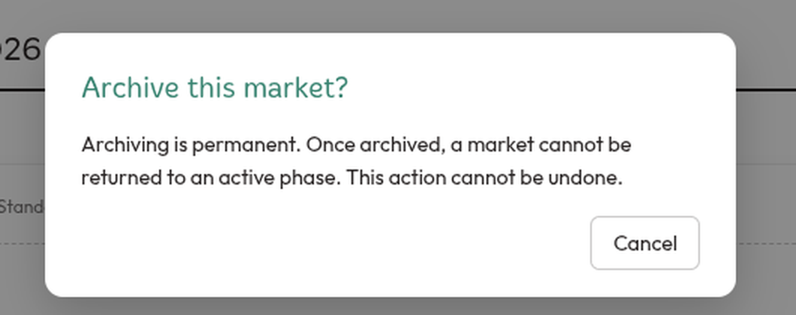
(255,255,255).The dialog says "Archiving is permanent. Once archived, a market cannot be returned to an active phase. This action cannot be undone." and then appears to offer exactly one option: Cancel.
Declared in PhaseRail.vue | Computed | Why |
|---|---|---|
background: var(--mm-text-red) | rgba(0, 0, 0, 0) | invalid at computed-value time → resets to initial |
border: 1px solid var(--mm-text-red) | 0px | shorthand invalid → whole declaration dropped |
color: white | rgb(255,255,255) | valid, so white text survives onto a white dialog |
--mm-text-red is never defined. It is not in base.css; getPropertyValue('--mm-text-red') on :root returns the empty string. Seven rules reference it with no fallback:
.confirm-archive-button - the invisible button above..rail-menu-item--end - "Archive Market" in the menu renders rgb(44,62,80), identical to body colour. The comment directly above that rule reads "Destructive reads as destructive wherever it appears." It does not..phase-rail-error - rail errors render in body colour, not red.PlacementDialog.vue.The sibling token --mm-red is also undefined, but its 24 usages all carry var(--mm-red, #cc0000), so they render and nobody noticed the token was a phantom. That fallback is the source of the #cc0000 ×27 count in S5: the most-used red in the product is a default that stands in for a variable that was never written.
Also in this dialog: the heading "Archive this market?" is set in --mm-green, the product's affirmative colour, on a permanent destructive confirmation.
The Tier <select> renders at 65px wide, leaving 34px of text room after padding and the native arrow. Every option it offers is wider than that:
| Option | Needs | Has | Overflows by |
|---|---|---|---|
| Premium | 56px | 34px | 22px |
| Standard | 57px | 34px | 23px |
| Community | 71px | 34px | 36px |
So the tier column reads Pr…, St…, Co… on every row, forever. The Location select is the same problem one notch less severe: at 89px it truncates "Mezzanine" by 10px.
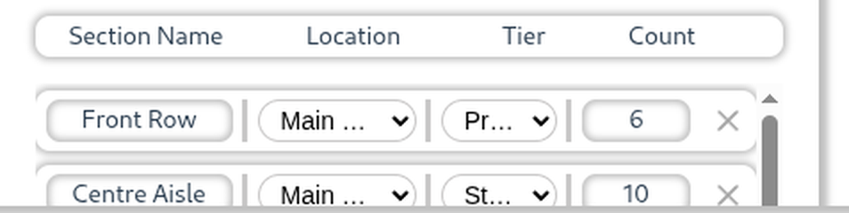
The cause is the three setup panels being forced to equal thirds. Location Setup needs one column and gets 461px; Section Setup needs four columns plus a delete control and gets 460px.
font-familybody sets Inter; 354 component rules set Outfit or Merge One. But <button>, <input> and <select> do not inherit font-family from their ancestors - the user agent sets it. Only 5 rules in the entire codebase say font-family: inherit. Everything else falls through to Arial.
Measured on the login screen, which is the first thing any organizer sees:
| Control | Typeface | Size | Height |
|---|---|---|---|
| Sign in / Register / Sign-in code tabs | Arial | 16px | 45px |
| Email input | Arial | 20px | 54px |
| Password input | Arial | 20px | 54px |
| Show | Arial | 14px | 54px |
| Menu, Close | Arial | 13.33px | 54 / 30px |
| Sign in (submit) | Outfit Regular | 20px | 60px |
| Sign out | Inter | 14px | 36px |
Three typefaces and five control heights on one screen. The 13.33px size is the browser's own default, which is the tell: those controls have never been styled at all.
button, input, select, textarea { font: inherit } would make every control render Inter, because that is what body declares - while the 274 Outfit rules around them stay Outfit. The fix is two lines: set body to Outfit (already the product's real UI face, 274 declarations against Inter's 2), then inherit on the controls. See also H16 below.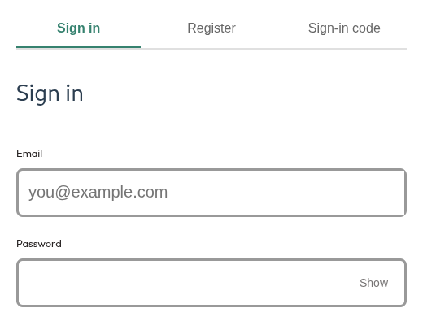
main.css declares exactly two @font-face rules, one weight each, and neither carries a font-weight descriptor:
@font-face { font-family:'Merge One'; src:url('/fonts/MergeOne-Regular.ttf'); }
@font-face { font-family:'Outfit Regular'; src:url('/fonts/Outfit/static/Outfit-Regular.ttf'); }
At runtime document.fonts confirms it: one face per family, both weight: normal. Meanwhile the source asks for a heavier weight 65 times:
| Requested | Declarations | Face available? |
|---|---|---|
500 (Medium) | 27 | no - synthesised |
600 (SemiBold) | 24 | no - synthesised |
bold / 700 | 14 | no - synthesised |
100 (Thin) | 2 | no - renders as regular |
400 / normal | 20 | yes |
With no matching face, the browser synthesises the weight by smearing the regular outline. That is why emphasis across the product looks slightly muddy rather than crisp - it is not a real typeface, it is an algorithm thickening one.
front-end/public/fonts/Outfit/static/ contains Medium, SemiBold and Bold, and public/fonts/Outfit-VariableFont_wght.ttf covers the whole axis. Nothing needs downloading or licensing - three @font-face rules with font-weight descriptors, or one variable-font rule with font-weight: 100 900, and 65 declarations start rendering the type that was shipped for them.
The family name is part of the problem: calling the family 'Outfit Regular' names a weight as if it were a family, which is what makes adding the other weights feel wrong. The family is Outfit; Regular is one of its weights.
A reviewer works this screen once per application - 232 times for the real UBC export. Two of its three verdict buttons put white text on a ground that cannot carry it:
| Control | Foreground | Background | Ratio | Needs |
|---|---|---|---|---|
| Skip | white | --mm-border over white | 1.74:1 | 4.5:1 |
| Reject | white | #F44336 | 3.68:1 | 4.5:1 |
| Approve | white | #3A853D | 4.56:1 | 4.5:1 |
base.css exempts --mm-border from the contrast contract on the stated grounds that it "never carries text", and contrast.test.ts asserts tokens rather than usages. The Skip button uses --mm-border as a fill with white text on it, which the test cannot see. The same rgba(39,35,35,.25)-with-white-text pattern is the disabled state of "Create market" in the new-market dialog.
The keyboard-shortcut chips (R, S, A) inherit the same grounds and the same ratios, at 11px. Note that Approve clears the bar by 0.06: all three verdict buttons were coloured without the contrast contract in view, and one of them happened to land on the right side of it.
--mm-green is documented at 4.59:1 and measured on white. The phase rail's ground is #FBFBFA, not white, and the current phase label renders at 4.43:1 - just under the bar, on every market screen, every time.
It is a two-hundredths-of-a-shade miss, and worth fixing precisely because the contrast work was done deliberately: the token is right, the ground it was measured against is not the only ground it is used on.
true"Do you need access to mains power at your table?" renders its answer as the raw boolean true. Every other answer on the card is rendered for a human - dates are spelled out, tier preference is joined per date, table choice reads "A whole table to myself".
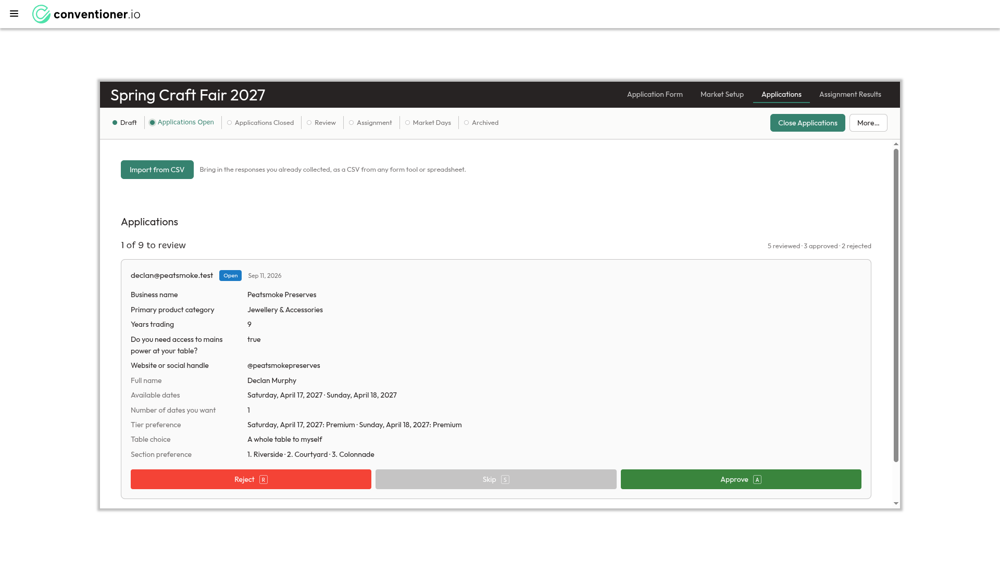
true on row 4. Note also that the card's headline is an email address while the applicant's name and business are rows 6 and 1 of a 12-row list.market_days leaks into the form-lock bannerThe banner reads "Application form can only be edited while the market is in draft phase. Current phase: market_days." Two inches above it, the phase rail names the same state Market Days. One screen, one state, two spellings, one of them snake_case.
"Download CSV" sits at y=881, "Send to Discord" at y=902, both 35px tall, both in the same footer row. The gap comes from the Discord hint being stacked above its button while the CSV button has no hint, so nothing holds the row to a shared baseline.
The hint also sits above the control it explains and clears the card above it by 3px.
Down the Vendors list, the right-hand metadata starts at three different x positions:
| Row | Badge ends | "N / 2 dates" starts |
|---|---|---|
| Kwame Boateng - Unassigned, 0 / 2 | 1375 | 1387 |
| Emil Novak - Assigned, 2 / 2 | 1377 | 1389 |
| Cassandra Nwosu - Assigned, 1 / 2 | 1379 | 1391 |
The group is right-aligned, so the jitter propagates leftward from the width of the digits themselves: in Outfit, 0, 1 and 2 are different widths. font-variant-numeric: tabular-nums on any column of figures fixes this class of defect everywhere at once. The previous walk recorded this jitter on Markets and Organizations without finding its cause; this is the cause.
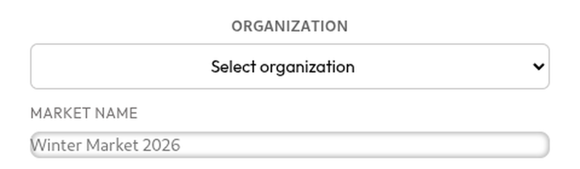
| ORGANIZATION | MARKET NAME | |
|---|---|---|
| Label alignment | Centred (97px, shrink-wrapped) | Left (430px, full width) |
| Field shape | Bordered rect, 6px radius | Pill, grey fill, inset shadow |
| Field typeface | Outfit Regular | Inter |
| Field height | 38px | 22px + wrapper |
Both labels are uppercase, which nothing else in the product does - every other form uses sentence-case labels ("Your email", "Business name").
"Date", "Priority / Tier Name", "Location Name" and "Section Name / Location / Tier / Count" are non-interactive headings rendered with the same rounded border, the same inset shadow and the same centred text as the input pills below them. A control's appearance is a promise about what it does; these break it on every row of the plan editor. See the H1 figure.
51px of text in a 48px box, with overflow not set to scroll or auto - so the last glyph is simply cut. The only clipped text node found across 13 measured screens, which is a good result; it is listed because it is unambiguous.
#00ff00 is the floorplan editor's selection colourSelected tables, transformer anchors and drag handles all stroke #00ff00 on a --mm-beige canvas. Pure primary green at full saturation appears nowhere else in the product and belongs to no palette; it is a placeholder that shipped.
Scoped low because the floorplan GUI is explicitly cut from MVP. It should be fixed when that surface is picked up, not before.
Because the card height is a percentage of the viewport rather than a function of its content, the clipping point lands wherever it lands: "Centre Aisle" is sliced through the middle of its row, "Window Wall" through its label, "Fixed options - a table seats two" through its descenders. A scroll boundary that falls mid-glyph reads as a rendering fault rather than as more content below.
This is the visible symptom of the sizing question already open as ticket 01; see O1 for the fresh measurements.
The email input is 42px tall, "Look up" is 40px, both starting at the same y. The button's bottom edge sits 2px proud of the field's. Trivial in isolation, listed because it is the same absent-shared-control-height that produces H2's five heights on one screen.
A design system's job is to make most decisions once. These counts are what it looks like when they are made 71 times instead. Every figure below is from the committed source, not from one screen.
| Value | Uses |
|---|---|
6px | 72 |
8px | 49 |
5px | 46 |
10px | 31 |
4px | 29 |
50% | 13 |
12px | 10 |
999px | 8 |
3px | 7 |
20px | 5 |
…plus 14px, 30px, 100px, 1px, 0, 0px, 0.5rem | |
Four values within 4px of each other (4, 5, 6, 8) account for 196 uses. "Fully rounded" is spelled four ways: 999px, 100px, 30px, 20px. 0.5rem is 8px written differently.
| Value | Uses |
|---|---|
14px | 190 |
13px | 94 |
12px | 67 |
16px | 39 |
20px | 23 |
18px | 22 |
15px | 22 |
11px | 18 |
24px | 10 |
…plus 17, 19, 22, 26, 28, 30, 36, 48, 8, 10px, 1.2rem, 0.8em, clamp() | |
Every integer from 11px to 20px is in use. A type scale has five to seven steps chosen to be distinguishable; adjacent 1px steps are not distinguishable, so they carry no meaning - they just make two screens disagree. 10px and 8px body text is below any readable minimum.
| Value | 8 | 10 | 12 | 4 | 6 | 2 | 16 | 20 | 24 | 40 | 14 | 5 | 3 |
|---|---|---|---|---|---|---|---|---|---|---|---|---|---|
| Uses | 118 | 87 | 58 | 52 | 51 | 31 | 30 | 24 | 23 | 20 | 17 | 10 | 9 |
A 4px scale would be 4 / 8 / 12 / 16 / 24 / 32 / 40. The second most-used value in the product is 10px, which is on no such grid, and 2, 3, 5, 6, 14 and 18 account for another 135 uses. This is why two panels that should look like siblings do not: their internal rhythms are a pixel or two apart everywhere.
| Source | Uses |
|---|---|
var(--mm-*) tokens | 704 |
| Hardcoded hex (excl. pure black/white) | 351 |
| Token | Uses |
|---|---|
--mm-black | 205 |
--mm-green | 163 |
--mm-border | 117 |
--mm-text-muted | 107 |
--mm-text-red (undefined) | 7 |
--mm-red (undefined) | 24 |
| Colour | Uses | Colour | Uses | Colour | Uses |
|---|---|---|---|---|---|
#cc0000 | 27 | #d32f2f | 18 | #c0392b | 11 |
#c62828 | 6 | #e74c3c | 5 | #b71c1c | 4 |
#8a1f1f | 4 | #f44336 | 1 | #e53935 | 1 |
77 occurrences for one semantic role. Two of them ship next to each other: "Delete market" is #D32F2F (4.98:1) and "Reject" is #F44336 (3.68:1, failing). The most-used of them, #cc0000, is not a chosen colour at all - it is the fallback in var(--mm-red, #cc0000), standing in for the undefined token of H0. Three of the nine cannot carry white text at all: #e74c3c, #f44336 and #e53935.
| Colour | Where | Note |
|---|---|---|
#36826F | --mm-green, and once hardcoded | the intended brand green |
#00DC82 | the logo, on every screen | a vivid mint the rest of the product never uses |
#49B096 | still in source, plus a tinted shadow | the value base.css says was darkened away for failing contrast at 2.65:1 |
#0C875E | "Market Days" phase badge | none of these are in base.css |
#3A9A82 | 6 rules | |
#3A853D | Approve button | |
#388E3C | 3 rules | |
#2E7D32 | 3 rules |
#00DC82 and the Sign in button paints #36826F, 40px apart. #00DC82 is a well-known framework's stock brand green; it reads as a template that was never replaced. Whatever the brand green is, the logo and the primary button should be the same one.
| Chip | Screen | Shape | Fill | Text |
|---|---|---|---|---|
| Market Days | Markets | pill, r20 | solid #0C875E | white |
| Applications Open | Markets | pill, r20 | solid #3472D8 | white |
| Open | Triage card | rect, r4 | solid #1B7AC5 | white |
| Owner | Organizations | rect, r4 | tint #E3F2FD | --mm-text-link |
| Unassigned | Vendors | rect | amber tint | amber |
| FULL TABLE | Tables | pill, uppercase | solid green | white |
"Applications Open" and "Open" are the same state seen from two screens, in two different blues, in two different shapes. Only one chip in the set - "Owner" - uses a palette token for its text.
| Control | Screen | Treatment |
|---|---|---|
| Assign | Market Setup | pale green fill, white text |
| Send to Discord | Assignment Results | grey fill, white text |
| Import from CSV | Applications | mid-grey fill, dark text |
| Create market | New market dialog | rgba(39,35,35,.25), white text (1.74:1) |
These are the soft calls - how the screens are arranged, what they emphasise, and whether the arrangement helps. Where the product disagrees with itself I have said which side I think is right.
| Screen | Content width | Gutter |
|---|---|---|
| Market Setup / Application Form / Assignment Results | 1536px (80% of viewport, height pinned too) | 192px |
| Tables / Vendors / Attendance | 1100px | 410px |
| Markets / Organizations | 1840px | 40px |
| Import applications | 1854px | 32px |
Two screens of the same market differ by 436px. The consequence is measurable as hidden content:
| Scroller | Visible | Hidden | Shows |
|---|---|---|---|
settings-body-plan (Market Setup) | 547px | 554px | 50% |
assignment-results-body | 536px | 573px | 48% |
form-builder-container | 559px | 1,935px | 22% |
tables-body | 686px | 10,879px | 6% |
Market Setup nests six scrollers, three of which also scroll horizontally by 4-8px, which is what produces the tiny stub scrollbars inside the setup panels. The outer page cannot scroll at all, so the organizer scrolls inside a box on a screen that is 19% empty at the sides.
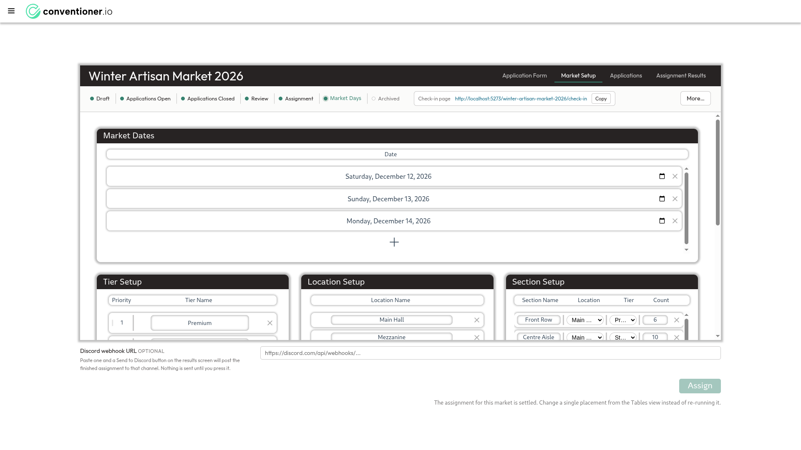
The height: 80% dates to the first commit of this view in Feb 2025 and was never a decision. Ticket 01 already has the authority to delete it; these numbers are offered as evidence for that ticket, not as a competing proposal.
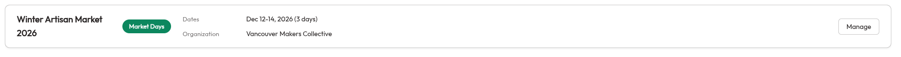
The name-and-badge cell is hard-capped at 320px inside an 1840px row. Two of four market names wrap to two lines as a result, while the last content on the row ("Vancouver Makers Collective") ends at x=718 and nothing occupies the 1,050px between it and the Manage button.
Wrapping also makes the rows unequal heights - 92, 92, 87, 87 - so a list of peers has a ragged vertical rhythm for no reason a reader can see.
.summary-card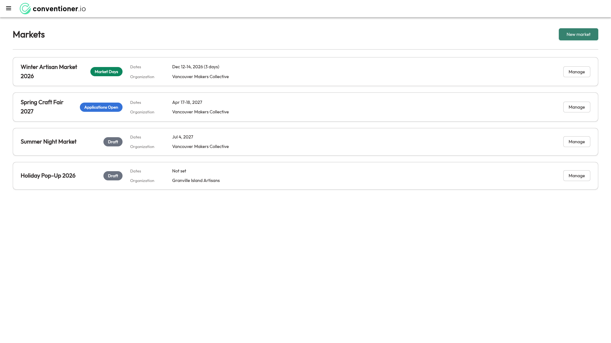
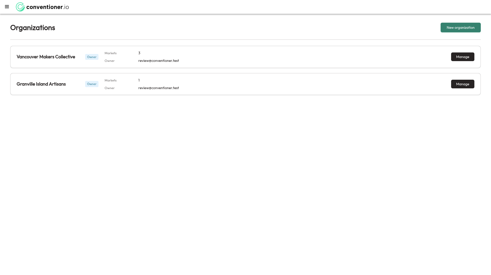
#272323, white text, weight 500, 91px. Badge is a tinted rect, not a solid pill.Same component, same label, same role, one screen apart. The Organizations treatment is the stronger of the two - a solid dark button reads as the row's action - but the badge treatment is better on Markets, where the phase deserves the colour. Either is defensible; having both is not.
Check in is already the primary button on the row whose date is today, and secondary on every other row - :class="row.date === today ? 'primary-button' : 'secondary-button'". The walk measured a market whose dates were all in the future, so every row rendered secondary. That design is better than what this finding proposed: making every row primary would make a mis-tap on the wrong day exactly as easy as the right one.What survives: "Look up" stays solid green after it has been used, so on the result view a spent control wears the only green on a page someone is holding at a door. It now demotes to secondary once a result is showing.
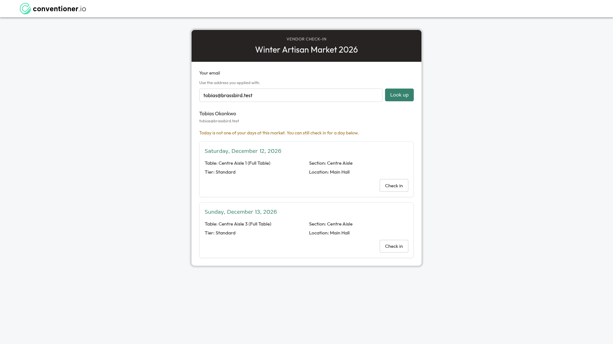
The lesson is about the walk, not the screen: a surface whose behaviour depends on the date cannot be judged from a fixture dated in the future. The Method section's note on what a walk finds applies here too.
The only button on a market row opens a dialog containing user permissions, organization access, rename and delete. Opening the market - the thing an organizer wants nineteen times out of twenty - is done by clicking the row body, which carries no affordance saying so.
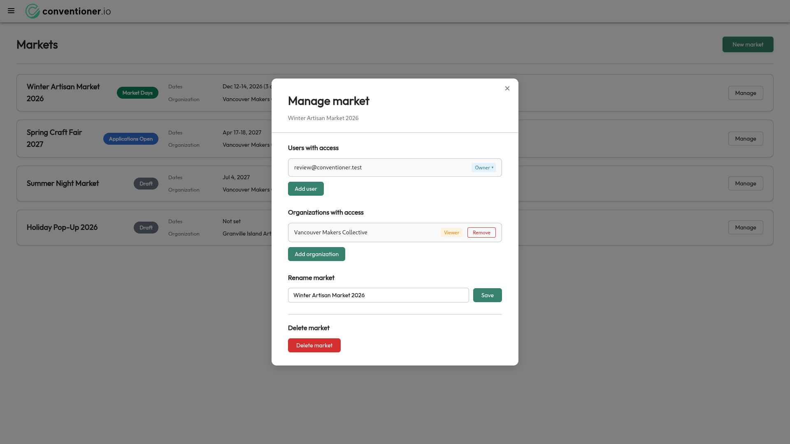
Inside the dialog, "Add user", "Add organization", "Save" and "Delete market" are all 34px, weight 400, 6px radius. A destructive irreversible action is the exact visual weight of adding a collaborator, and the four sections have dividers on two of their three boundaries.
Recommendation: the row's button says "Open"; administration moves behind a quiet secondary control or the existing "More…" menu.
| Screen | Header reads | Names the market? |
|---|---|---|
| Vendors | "Vendors: Spring Craft Fair 2027" | yes |
| Tables | "Tables" | no |
| Attendance | "Attendance Status" | no |
| Market Setup and its tabs | "Winter Artisan Market 2026" | yes, but drops the screen name |
An organizer running two markets in the same week can open Tables and have nothing on screen tell them which market's tables these are. The Vendors form is the right one.
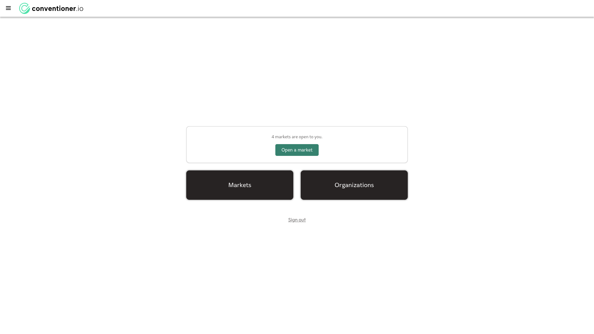
"Open a market" navigates to /markets. The "Markets" card directly below it navigates to /markets. Two controls, one destination, 60px apart.
The hierarchy is also inverted: the two largest, heaviest elements on the page are secondary navigation rendered as near-black filled blocks, while the primary action is a small green button above them. And "Sign out" is a text link floating in the middle of the page rather than in the header where account actions live.
Content occupies a 313px band of a 1080px viewport - the page is about 90% empty. Whatever this screen is for, it is currently a menu with three items, two of which are the same item.
applications_open marketOn a market with 9 open, 3 approved and 2 rejected applications, the Vendors screen reads "3 of 14 vendors assigned" and lists all 14, badging the eleven non-approved ones "Unassigned" - visually identical to an approved vendor the solver could not place.
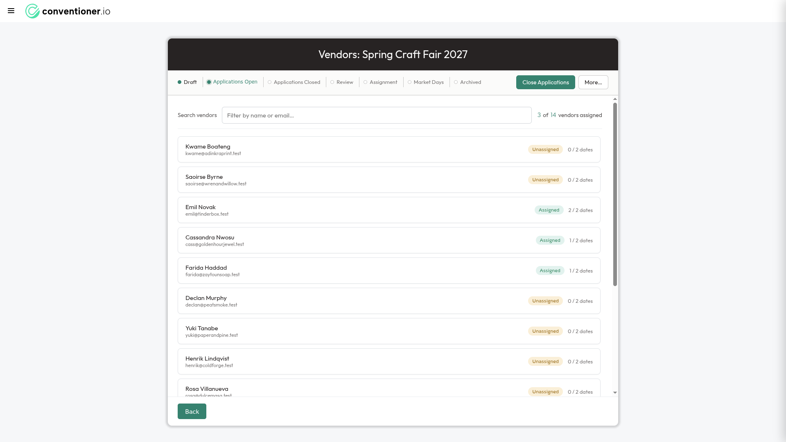
The two facts a reviewer decides on are who the applicant is and what they sell. The card's headline is declan@peatsmoke.test at 15px weight 400 - the same weight as body text - while "Peatsmoke Preserves" is row 1 and "Declan Murphy" is row 6 of a twelve-row list.
The label column also splits by colour: custom fields get near-black labels, essential fields get grey ones. That reads as "the essential questions matter less", which inverts their actual role, and nothing on screen explains the split.
Recommendation: business name as the card's headline, applicant name beneath it, email as metadata beside the date. E13 gave vendors names; this card has not picked them up.
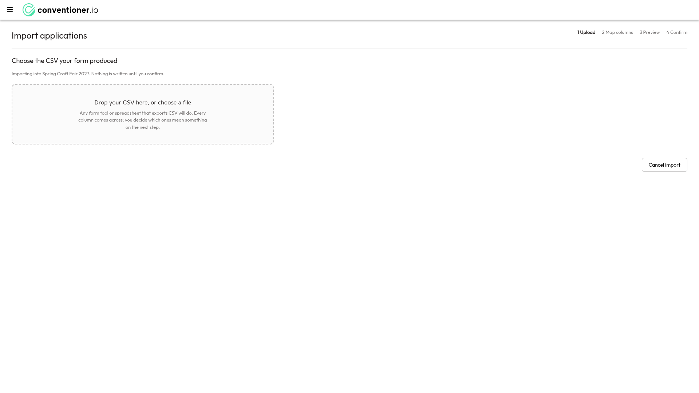
The import wizard has no card, no black header, no phase rail and no market name in its chrome - the market is named in body prose. Its page title is 24px at x=32; the Markets title is 28px at x=40.
"1 Upload · 2 Map columns · 3 Preview · 4 Confirm" is plain text with the current step bolded: no connectors, no markers, no progress. Two inches of product away, the phase rail is a properly drawn stepper. The wizard should borrow it.
The dropzone is 718px wide and left-aligned in an 1854px page, so the one thing the screen asks for sits alone with 1,130px of nothing beside it.
"No check-ins recorded yet." "Nothing left to review." Both are one muted line centred in a large white void, with no indication of what will appear there, or what to do next. The Attendance empty state sits directly below a check-in URL it never mentions.
The floorplan editor's empty state is the best of them - it offers a button - but it is also the only screen in the product with a --mm-beige page background, and its voice ("Please start from the Market Setup page") is formal in a product that otherwise writes "Nothing left to review."
This section exists because the recommendation is not "redesign it". Five things in this product are good enough to be the reference the rest is brought up to.
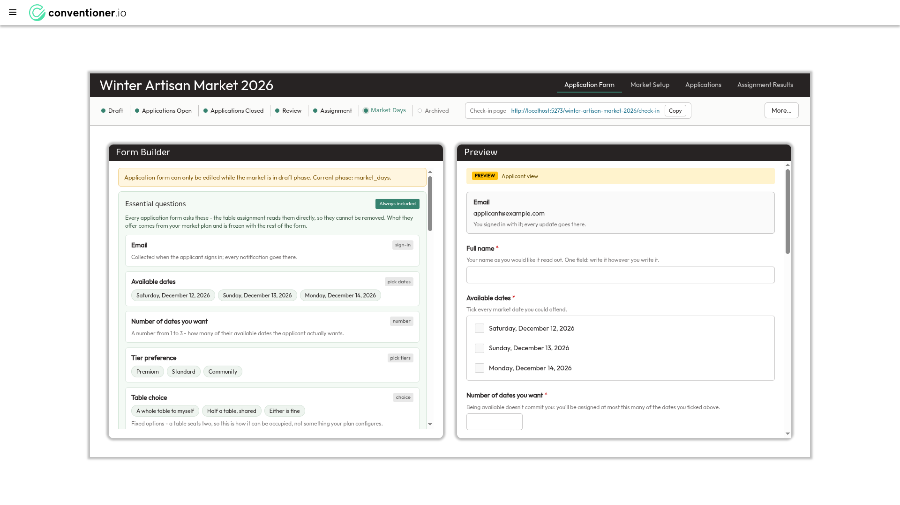
Builder and applicant preview side by side at equal width, field cards with type chips, helper text under every label, options shown as the applicant will read them. This is the clearest screen in the product and the one a new organizer would understand fastest. Its only defect is the market_days leak (H6).
Four numbers at 30px on a green field with their labels above them, and one line of prose underneath explaining what "satisfaction" means. It answers "did this work" in one glance and then explains its own terms. The quick-nav card beside it - three icon links separated by hairlines - is the cleanest navigation in the product.
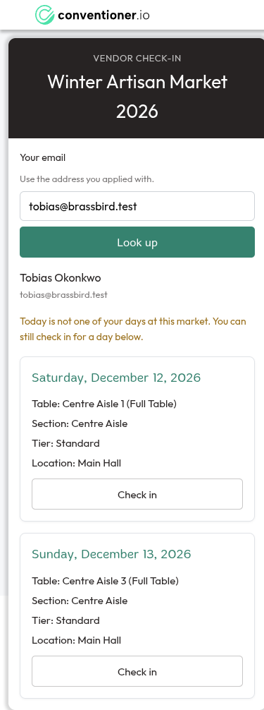
Measured at 390×844: no horizontal scroll, no overflowing element, no contrast failure, and every control at or above 40px. This is the one surface someone holds in their hand at a door and it is the best-executed surface in the product. Only O4's button hierarchy is wrong.
"Nothing is written until you confirm." "Being available doesn't commit you: you'll be assigned at most this many of the dates you ticked above." "Your form never asked Section preference. It is a preference, not a constraint, so this market can stop asking it."
The interface prose is better than the interface. Several findings above are cases where good writing is attached to a control that undermines it - the import advisory beside a hard-disabled button, the Discord hint above a button it does not align with.
I sampled eight points across the page behind an open dialog. Every one was dimmed to exactly 50% - header, list rows, empty page, all uniform. E14's modal work holds up. Noted because it is the kind of thing only a measurement confirms, and my first visual impression of it was wrong.
Stack. dev @ 1aac84c6, the local docker stack, a fresh organizer account so every list started clean without touching the existing dev data.
Fixture. Two organizations; four markets covering draft (empty and part-built), applications_open and market_days; 36 applications across 22 named vendors with realistic business names, varied availability, per-date tier preferences, half and full table choices, table sharing, and a mix of open, approved and rejected. Three dates, three tiers, four sections across two locations, 90 tables, a real solver run.
Walk. 20 screens captured at 1920×1080 and check-in additionally at 390×844. On 13 of them I ran two instrumented passes in the page: a geometry and inventory sweep (overflow, clipped text nodes, nested scrollers, typefaces, sizes, radii, shadows, gaps, control variants) and a WCAG contrast sweep computing each text node's effective composited background through its ancestors.
Source. Counts of radius, type, spacing, colour and font-family declarations are from front-end/src, not from any one screen.
Two claims I withdrew. I thought the modal scrim was failing to cover the list rows - it was my sampling points landing inside the dialog, and the scrim is correct. I thought the form builder and preview panels were 7px apart - they are both exactly 713px, and the apparent difference was a shadow. Both are recorded here because a review is only worth what its retractions are.
One correction after publishing. I had Approve at 5.06:1 from a hand calculation; measured, it is 4.56:1. It still passes, by 0.06.
H0 was found after the first draft, while grilling the colour inventory - by diffing the custom properties defined in base.css against those referenced across the source, which is a check no screenshot pass would ever run. It is the strongest argument in the report for the usage-level guard in H3, and the clearest evidence that a walk finds what it happens to open: I had visited the phase rail on four screens without ever opening its destructive confirmation.
Excluded. The Vue DevTools overlay, which is injected by the dev server and is not product UI. The applicant-facing surfaces, which MVP never serves.
No Wayfinder map was charted. Grilling the findings settled every question the destination contained - approach, mechanism, brand, scales, palette, enforcement, sequence - so there was no fog left to map. The decisions live in three places:
| Where | What it holds |
|---|---|
docs/design-system.md | The stated visual language: two families and a six-step type scale, a 4px spacing grid, three radii, one shadow, --mm-red: #c0392b and --mm-blue: #1a6f8b, and the three checks that keep it true. S1-S8 resolve here. |
.scratch/backlog/E15-corrections-the-third-walk-found/ | The fixes that carry no decision: H2, H5, H6, H7, H8, H11, H14, H16, O4, O6. Startable now. |
.scratch/backlog/E16-one-design-language/ | The token layer and the migration, in eight features. F01 is the urgent one - it closes H0, H3, H4 and the colour inventory. F03 is the sizing model, the build of claims-and-room ticket 01, which closes H1, H10, H13, O1 and O2. Each slice is its own feature, reviewed and shipped alone. |
--workspace-max: 1440px, --list-max: 1100px) replace the four, no screen caps its own height, and plan columns are sized by need. It also graduated one new ticket - a published market's phase rail is 111px where a draft's is 27px, and the check-in chip is the entire cause.